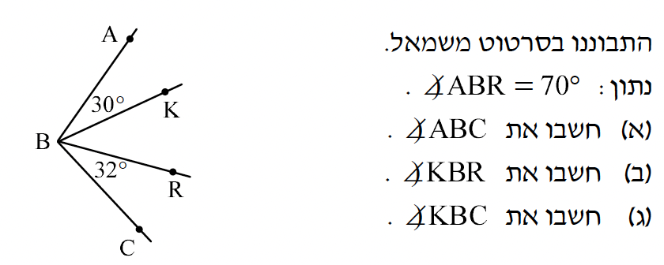
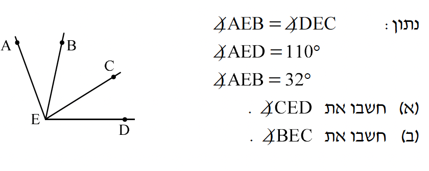
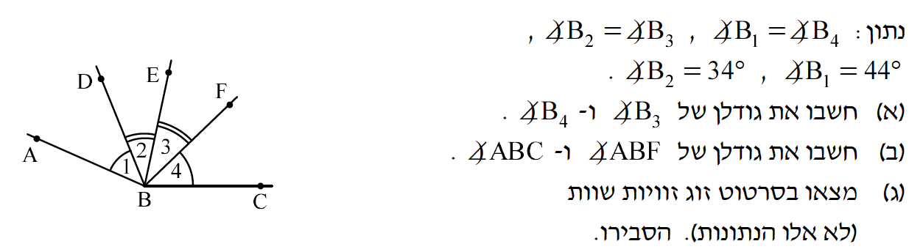

📝
כתבו את התשובות על דף נפרד — ממספרים לפי מספר השאלה! תזדקקו לזה בבדיקה העצמית.
רצף 3 — סכום והפרש זוויות
1. התבוננו בסרטוט.

2. התבוננו בסרטוט.

3. התבוננו בסרטוט.

א. חשבו את גודל
∡B₃ ו-
∡B₄:
ב. חשבו את
∡ABF ואת
∡ABC:
ג. מצאו בסרטוט זוג זוויות שוות (לא אלו הנתונות). הסבירו:
ניקוד: